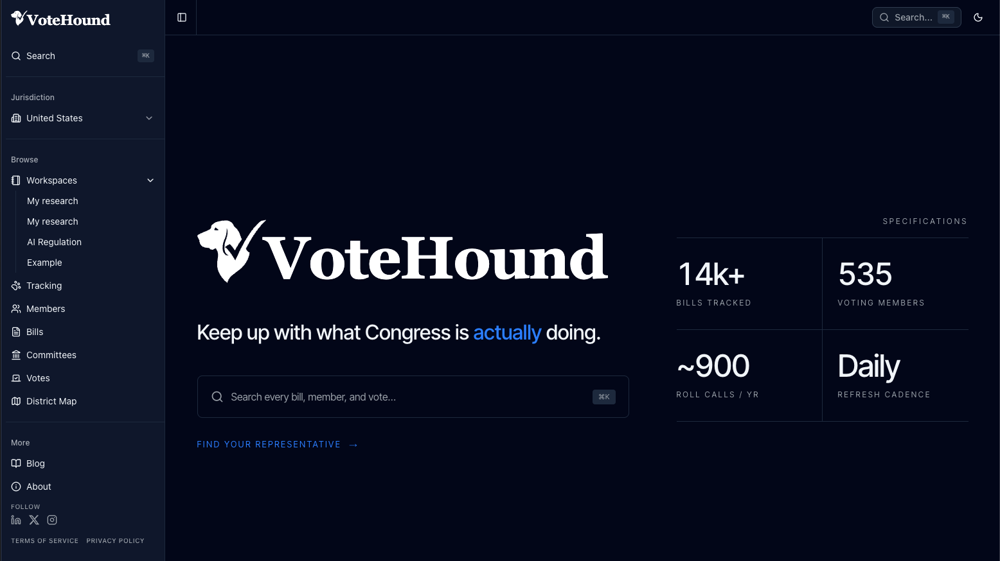
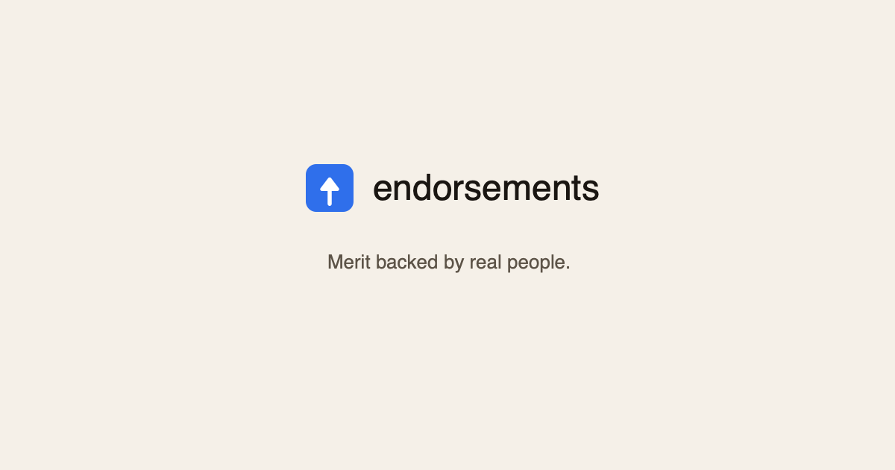
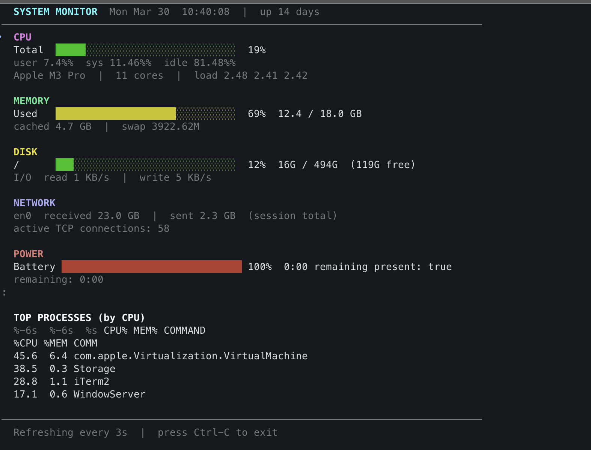

Hi, I'm
Jordan Liebling

8+ years building enterprise-scale applications — and over the last 2, AI-enabled engineering has become my expertise.
Coffee enthusiast. Gym regular. Gamer.
Hi, I'm
8+ years building enterprise-scale applications — and over the last 2, AI-enabled engineering has become my expertise.
Coffee enthusiast. Gym regular. Gamer.
I'm a full-stack builder and the primary person driving my engineering org's AI adoption and enablement. After years across different tech stacks — starting in .NET and Angular, then focusing on web frontend development — AI is now what defines my work.
A lot of it is hands-on. I test new tools and workflows to determine what's actually useful versus what's just hype, and I build the guardrails so the team can move fast with confidence:
I also handle the people side: suggesting process changes that make working with AI feel natural, doing 1-on-1 enablement with engineers at every level, and running lunch-and-learns to get everyone up to speed.
// after hours
After hours, I've shipped AI-integrated products — from larger builds like votehound.com to weekend projects like endorsements.app — on the Claude, OpenAI, Gemini, and Voyage APIs. Those projects are where I go deep: system prompt and harness design, chunking, reranking and semantic search, retry strategies for failing prompts, AI feature budget controls, local code review with Ollama, and Stripe integrations, all on a Node.js, React, Next.js, Railway, Postgres/pgvector, and Redis stack. I'm also constantly in the tooling itself, living in Claude Code, agent teams, and Claude cowork, and currently testing harnesses for locally run LLMs.
I leverage AI to take large, full-stack projects from idea to MVP — and enable others to do the same. I enjoy building and shipping real products, expanding my knowledge and skills, and being a go-to resource for mentorship.
TypeScript, React, Angular, Java/Spring Boot, Node.js. Building and shipping across enterprise monorepos and greenfield MVPs alike. Primary and reliable code reviewer, focused on maintaining quality and consistency across the codebase while mentoring others along the way.
Integrating Claude Code and GitHub Copilot deeply into daily development. Building skills.md files, instruction sets, and custom tooling to accelerate AI-assisted workflows. Focused on making these tools practical and repeatable — not just for myself, but to uplift the entire team.
Continuously evaluating new additions to my personal toolkit — agent harnesses, MCP servers, model-selection strategies, skill packs, and emerging dev workflows. Treating my own setup as a sandbox lets me form real opinions on what's worth standardizing before bringing the patterns back to the team.

Real-time congressional activity tracker. Aggregates votes, bills, and legislator data into a clean, searchable interface.
votehound.com →
Merit backed by real people. Thank and recommend colleagues with endorsements tied to a verified professional identity and validated by an AI agent before going public — built for the AI-slop era.
endorsements.app →
Lightweight system performance monitor built for keeping tabs on resource usage while running multiple iTerm/tmux terminals with Claude agent teams.
github.com/Jitlan/sysmon →Jordan Liebling is a Senior Software Engineer with 8+ years of experience building production web systems across enterprise and startup environments. Specializing in full-stack development with TypeScript, React, Angular, Java/Spring Boot, and Node.js, Jordan has spent the last two years going deep on AI-enabled engineering workflows.
Key achievements include building a RAG application that reduced subject-matter-expert interruptions by approximately 30%, championing internal AI tooling adoption (GitHub Copilot, MCP servers) that drove a measured 20%+ increase in developer productivity, and serving as architectural gatekeeper for an enterprise-scale Angular monorepo with 100+ pull requests reviewed annually.
Technical expertise spans TypeScript, JavaScript, Java, React, Angular, Next.js, Vue.js, Spring Boot, Node.js, Express, PostgreSQL, Redis, Azure, Docker, and GitHub Actions.
Current focus areas include agent harness design, token-budget management, and model selection for production agentic systems; deploying coordinated multi-agent teams via Claude Code remote-control mode; building AI tools for research and discovery workflows; and evaluating which Scrum ceremonies still earn their keep in an AI-assisted engineering practice. Treats his personal stack as a sandbox for AI tooling, harnesses, MCP servers, and skill packs — forming opinions on what's worth standardizing before bringing patterns back to the team.
Side projects include VoteHound, a real-time congressional activity tracker; Endorsements.app, a verified-identity professional endorsement platform built for the AI-slop era; and Sysmon, a lightweight system performance monitor for multi-agent terminal workflows.
Open to connecting with recruiters, engineering leaders, and fellow practitioners working on AI-enabled developer tooling, agentic systems, or applied research. Reach out on LinkedIn.